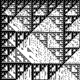
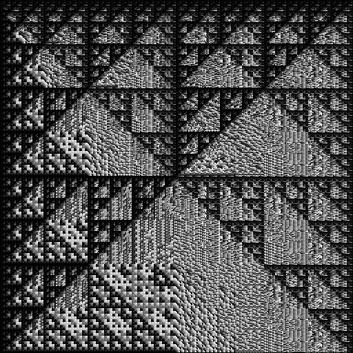
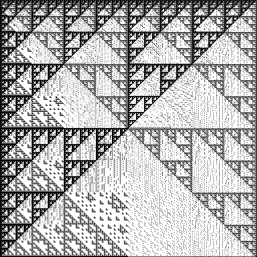

Generative Art: Mastodon-BitBot

Ich stieß auf meinen Streifzügen durch meine Bubble neulich wieder auf einen interessanten Bot und einen sehr interessanten Eintrag, den dieser gerade generiert hatte:
Der Bot hatte ein Bild erzeugt, dessen Ähnlichkeit zu Fraktalen mir sofort ins Auge stach - daher wollte ich eine eigene Implementierung, um damit Experimente durchführen zu können. Nachdem ich bemerkt hatte, dass eine Operation Modulo 0 (zumindest in Java) eine DivisionByZero-Exception auslöst musste ich entscheiden, wie ich damit umgehen wollte - nach einer (noch im Quelltext zu findenden, jedoch auskommentierten) Strategie, vorher das Argument der Operation auf 0 zu prüfen entschied ich mich - da es am Ergebnis augenscheinlich nichts änderte - mit dem brutalen Vorgehen, die Exceptions einfach auszusitzen. Das macht es auch einfacher, andere interessante Formeln des BitBot auszuprobieren: Man muss lediglich eine Zeile im Quellcode ändern...
Hier zunächst das Ergebnis meines Codes - einmal dargestellt mittels Farb-(bzw Graustufen-)Verlauf und einmal als Binärbild:

BitBot-Ergebnis als Graustufenverlauf

BitBot-Ergebnis als BinärbildHier nun der Quellcode zur Erzeugung der Bilder:
/*
* Copyright (c) 2021.
*
* Juergen Key. Alle Rechte vorbehalten.
*
* Weiterverbreitung und Verwendung in nichtkompilierter oder kompilierter Form,
* mit oder ohne Veraenderung, sind unter den folgenden Bedingungen zulaessig:
*
* 1. Weiterverbreitete nichtkompilierte Exemplare muessen das obige Copyright,
* die Liste der Bedingungen und den folgenden Haftungsausschluss im Quelltext
* enthalten.
* 2. Weiterverbreitete kompilierte Exemplare muessen das obige Copyright,
* die Liste der Bedingungen und den folgenden Haftungsausschluss in der
* Dokumentation und/oder anderen Materialien, die mit dem Exemplar verbreitet
* werden, enthalten.
* 3. Weder der Name des Autors noch die Namen der Beitragsleistenden
* duerfen zum Kennzeichnen oder Bewerben von Produkten, die von dieser Software
* abgeleitet wurden, ohne spezielle vorherige schriftliche Genehmigung verwendet
* werden.
*
* DIESE SOFTWARE WIRD VOM AUTOR UND DEN BEITRAGSLEISTENDEN OHNE
* JEGLICHE SPEZIELLE ODER IMPLIZIERTE GARANTIEN ZUR VERFUEGUNG GESTELLT, DIE
* UNTER ANDEREM EINSCHLIESSEN: DIE IMPLIZIERTE GARANTIE DER VERWENDBARKEIT DER
* SOFTWARE FUER EINEN BESTIMMTEN ZWECK. AUF KEINEN FALL IST DER AUTOR
* ODER DIE BEITRAGSLEISTENDEN FUER IRGENDWELCHE DIREKTEN, INDIREKTEN,
* ZUFAELLIGEN, SPEZIELLEN, BEISPIELHAFTEN ODER FOLGENDEN SCHAEDEN (UNTER ANDEREM
* VERSCHAFFEN VON ERSATZGUETERN ODER -DIENSTLEISTUNGEN; EINSCHRAENKUNG DER
* NUTZUNGSFAEHIGKEIT; VERLUST VON NUTZUNGSFAEHIGKEIT; DATEN; PROFIT ODER
* GESCHAEFTSUNTERBRECHUNG), WIE AUCH IMMER VERURSACHT UND UNTER WELCHER
* VERPFLICHTUNG AUCH IMMER, OB IN VERTRAG, STRIKTER VERPFLICHTUNG ODER
* UNERLAUBTE HANDLUNG (INKLUSIVE FAHRLAESSIGKEIT) VERANTWORTLICH, AUF WELCHEM
* WEG SIE AUCH IMMER DURCH DIE BENUTZUNG DIESER SOFTWARE ENTSTANDEN SIND, SOGAR,
* WENN SIE AUF DIE MOEGLICHKEIT EINES SOLCHEN SCHADENS HINGEWIESEN WORDEN SIND.
*
*/
import java.awt.*;
import java.awt.image.BufferedImage;
import java.io.IOException;
public class BitBot1
{
private static void saveTwoTone(int[] data, int imgdim, java.lang.String stem) throws IOException
{
java.util.Map<java.lang.Integer,java.util.concurrent.atomic.AtomicInteger> histogram=new java.util.HashMap();
for(int i=0;i<data.length;++i)
{
java.lang.Integer key=java.lang.Integer.valueOf(i);
if(histogram.containsKey(key)==false)
histogram.put(key,new java.util.concurrent.atomic.AtomicInteger(1));
else
histogram.get(key).addAndGet(1);
}
int maxindex=0;
int maxv=0;
for(java.lang.Integer key:histogram.keySet())
{
if(histogram.get(key).get()>maxv)
{
maxv=histogram.get(key).get();
maxindex=key.intValue();
}
}
java.awt.image.BufferedImage bimg=new java.awt.image.BufferedImage(imgdim,imgdim, BufferedImage.TYPE_INT_ARGB);
java.awt.Graphics2D g2=bimg.createGraphics();
for(int i=0;i<data.length;++i)
{
int x = i / imgdim;
int y = i % imgdim;
g2.setPaint(data[i]!=maxindex? Color.white: Color.black);
g2.fillRect(x,y,1,1);
}
g2.dispose();
javax.imageio.ImageIO.write(bimg,"png",new java.io.File(new java.io.File(System.getProperty("java.io.tmpdir")),stem+"_twotone.png"));
}
private static void saveGradient(int[] data, int imgdim, java.lang.String stem) throws IOException
{
de.netsysit.util.lang.MiniMax miniMax=new de.netsysit.util.lang.MiniMax();
miniMax.reset();
for(int i=0;i<data.length;++i)
{
miniMax.sample(data[i]);
}
System.out.println(miniMax);
java.awt.image.BufferedImage bimg=new java.awt.image.BufferedImage(imgdim,imgdim, BufferedImage.TYPE_INT_ARGB);
java.awt.Graphics2D g2=bimg.createGraphics();
de.netsysit.util.lang.MiniMax mapper=new de.netsysit.util.lang.MiniMax(0,255);
for(int i=0;i<data.length;++i)
{
int x = i / imgdim;
int y = i % imgdim;
double c=mapper.getMax()-miniMax.scaleIntoNewBoundaries(data[i],mapper);
java.awt.Color col=new java.awt.Color((int)c,(int)c,(int)c);
g2.setPaint(col);
g2.fillRect(x,y,1,1);
}
g2.dispose();
javax.imageio.ImageIO.write(bimg,"png",new java.io.File(new java.io.File(System.getProperty("java.io.tmpdir")),stem+"_gradient.png"));
}
}
//https://botsin.space/@bitartbot/106990430625960945
public static void main(java.lang.String[] args) throws IOException
{
int imgdim=512;
int[] fs=new int[imgdim*imgdim];
for(int i=0;i<fs.length;++i)
{
int x=i/imgdim+1;
int y=i%imgdim+1;
try
{
fs[i]=(((-(x | x)) % ((-y) | (x & y))) % (-((x % x) | (y & x)))) % 12;
}
catch(java.lang.Throwable t)
{
fs[i]=0;
}
/* int a=((-y) | (x & y));
int b=(-((x % x) | (y & x)));
int c=(-(x | x));
int f1=a!=0?(c % a):c;
int f2=b!=0?(f1 % b):f1;
int f= f2 % 12;
fs[i]=f;
*/ }
saveTwoTone(fs,imgdim,"106990430625960945");
saveGradient(fs,imgdim,"106990430625960945");
}
}


Vor 5 Jahren hier im Blog
-
Aviator + Websockets
15.06.2019
Nachdem ich in den letzten Wochen und Monaten meine Zeit und Energie in die sQLshell gesteckt habe - was sowohl Bugfixing als auch neue Features betraf - habe ich nun endlich die Zeit gefunden, ein bereits lange überfälliges Feature an dWb+ und speziell am aviator zu implementieren.
Weiterlesen...
Tags
Android Basteln C und C++ Chaos Datenbanken Docker dWb+ ESP Wifi Garten Geo Git(lab|hub) Go GUI Gui Hardware Java Jupyter Komponenten Links Linux Markdown Markup Music Numerik PKI-X.509-CA Python QBrowser Rants Raspi Revisited Security Software-Test sQLshell TeleGrafana Verschiedenes Video Virtualisierung Windows Upcoming...
Neueste Artikel
- Neue Version plantumlinterfaceproxy napkin look
Es gibt eine neue Version des Projektes plantumlinterfaceproxy - Codename napkin look.
Weiterlesen... - Apache HTTPCore5 funktioniert nicht mit Docker
Ich habe neulich drei Stunden meines Lebens verschwendet weil ich unbedingt die neueste Version der HTTPCore5 Library von Apache einsetzen wollte.
Weiterlesen... - Entwurfsmodus für beliebige SVG Graphiken
Nachdem ich in der Vergangenheit immer wieder Weiterentwicklungen der Idee vorgestellt habe, Graphiken mit dem Computer so zu ezeugen dass sie eine gewisse "handgemachte" Anmutung haben, habe ich nunmehr die durchschlagende Idee gehabt:
Weiterlesen...
Manche nennen es Blog, manche Web-Seite - ich schreibe hier hin und wieder über meine Erlebnisse, Rückschläge und Erleuchtungen bei meinen Hobbies.
Wer daran teilhaben und eventuell sogar davon profitieren möchte, muß damit leben, daß ich hin und wieder kleine Ausflüge in Bereiche mache, die nichts mit IT, Administration oder Softwareentwicklung zu tun haben.
Ich wünsche allen Lesern viel Spaß und hin und wieder einen kleinen AHA!-Effekt...
PS: Meine öffentlichen GitHub-Repositories findet man hier - meine öffentlichen GitLab-Repositories finden sich dagegen hier.